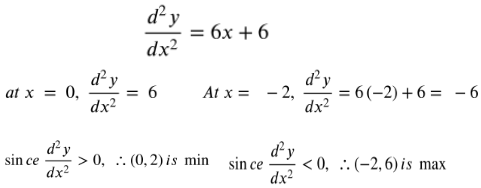

If y = f(x) has a critical point at x = c, with f’(c) = 0, then the behavior of f(x) at x= c can be analyzed through the use of the second derivative test by analyzing f’’(c).
Notice the signs of the slope to the left and right of the critical point.
This means, that if the critical point is minimum, the signs of slope are from negative to positive and if the critical point is a maximum, the signs of the slope are positive to negative
Identify the maximum and minimum points. From the above solution:
Let’s identify the maximum and minimum points by finding the second derivative.

From the solution above, it can be seen that (0,2) is the minimum and (-2,6) is the maximum.
From the solutions above:
Set the second derivative to 0 and find the point on the graph.